Roei (Roi) Herzig
I am a Postdoctoral Scholar at the Berkeley AI Research (BAIR) Lab, and a Research Scientist at the MIT-IBM Watson AI Lab. I work with Prof. Trevor Darrell on Structured Physical AI, and closely collaborate with Prof. Jitendra Malik, Deva Ramanan, and Shankar Sastry.
I design architectures and learning algorithms for Physical AI, grounded in structural priors. My work develops physical inductive biases and structured world representations for general-purpose agents, using robots as the ultimate testbed.
Previously, I received my Ph.D. from Tel Aviv University, advised by Prof. Amir Globerson; I have an Erdős number of 3. I graduated magna cum laude with M.Sc. (CS), B.Sc. (CS), and B.Sc. (Physics).
Award Received the 2023 IAAI Best PhD Thesis Award for the outstanding thesis in Artificial Intelligence in Israel.
New Looking for motivated PhD students, Postdocs, RAs, Masters, and Undergrads to collaborate and publish in top-tier conferences on AI & Robotics.
Open Currently on the academic job market.
Highlights
- Jul 2026 Our SPIN workshop was accepted to CoRL 2026 — see you in Austin!
- Apr 2026 1 paper accepted to ACL 2026.
- Mar 2026 Invited talk at Simon Fraser University, Vancouver.
- Mar 2026 Serving as Area Chair for NeurIPS 2026 and CoRL 2026.
- Feb 2026 Invited talks at UT Austin ECE, Purdue ECE & CS, Texas A&M ECE, Penn State, and Notre Dame.
- Feb 2026 2 main-track papers and 1 Findings paper accepted to CVPR 2026.
- Jan 2026 2 main-track papers accepted to ICLR 2026.
- Dec 2025 Serving as Area Chair for ICML 2026 and ECCV 2026.
- Jun 2025 Outstanding Reviewer at CVPR 2025 (top 5%, 711 of 12,593 reviewers).
- Jun 2025 Panel moderator at the MMFM3 Workshop, CVPR 2025.
- Apr 2025 Workshop MMFM4 accepted to ICCV 2025.
Selected Publications · Vision & Robotics
Selected recent work in vision and robotics.
-
Contrastive Action-Image Pre-training for Visuomotor Control
NewTech Report2026
project page bibtex model social media
We introduce CAIP, a state-of-the-art vision encoder that bridges the robotic data gap by leveraging massive-scale human video as a proxy to learn the action-centric structure necessary for robust, real-world dexterous manipulation.
-
T-Rex: Tactile-Reactive Dexterous Manipulation
NewTech Report2026
project page bibtex social media
We built a tactile-reactive two-stream architecture, supported by a large tactile-synchronized dataset, to push the limits of tactile, force, and contact feedback for dexterous manipulation tasks.
-
Playful Agentic Robot Learning
NewTech Report2026
project page bibtex social media
RATs shows embodied coding agents can learn transferable robotics skills through curiosity-driven play before a human specifies the task.
-
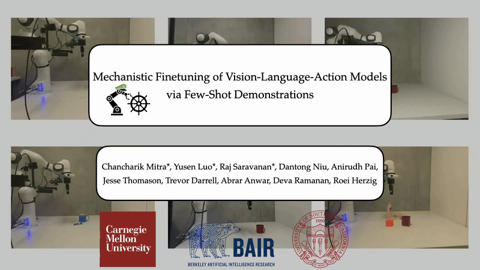
Mechanistic Finetuning of Vision-Language-Action Models via Few-Shot Demonstrations
ECCV2026Oral
project page bibtex social media
We introduce Robotic Steering, a finetuning approach grounded in mechanistic interpretability that leverages few-shot demonstrations to identify and selectively finetune task-specific attention heads aligned with the physical, visual, and linguistic requirements of robotic tasks.
-

From Generated Human Videos to Physically Plausible Robot Trajectories
CVPR (Findings)2026
project page bibtex social media
We developed a generalist tracking policy that enables a humanoid to mimic human actions from noisy, generated videos in a zero-shot manner.
-
Learning to Grasp Anything by Playing with Random Toys
ICLR2026
project page bibtex social media
Training robots on random toys enables zero-shot grasping of real-world objects.
-
Do What? Teaching Vision-Language-Action Models to Reject the Impossible

EMNLP2025
project page code bibtex social media
IVA is a unified framework for Vision-Language-Action models that detects false-premise instructions, clarifies them in language, and acts safely — improving robustness while preserving task performance.
-

Pre-training Auto-regressive Robotic Models with 4D Representations
ICML2025
project page code bibtex social media
We propose ARM4R, an Autoregressive Robotic Model that leverages low-level 4D Representations learned from human video data to yield a better robotic model.
-

In-Context Learning Enables Robot Action Prediction in LLMs
ICRA2025
project page code bibtex social media
We introduce RoboPrompt, a framework that enables off-the-shelf text-only LLMs to directly predict robot actions through ICL without training.
-

LLARVA: Vision-Action Instruction Tuning Enhances Robot Learning
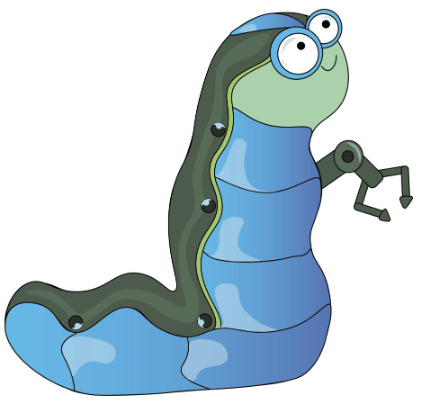
CoRL2024
project page code bibtex social media
We propose LLARVA, a model trained with a novel instruction tuning method that leverages structured prompts to unify a range of robotic configurations and introduces the concept of visual traces to further align the vision and action spaces.
Selected Publications · Vision & Language
Selected recent work in vision and language, with a particular focus on multimodal foundation models.
-
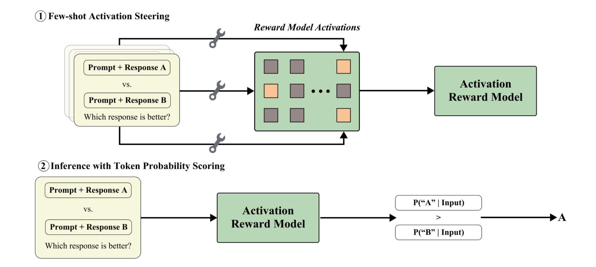
Activation Reward Models for Few-shot Model Alignment
NewACL2026
Activation Reward Models steer an LLM's internal activations to align with few-shot preference examples, producing reward signals without any finetuning. These models outperform standard baselines while resisting reward hacking, and surpass GPT-4o on PreferenceHack, a new paired-preference benchmark.
-
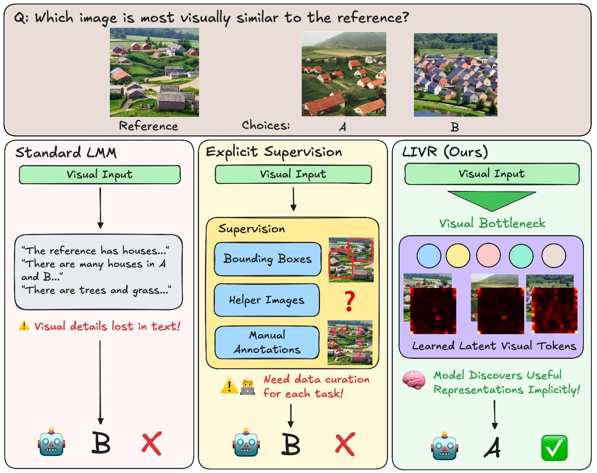
Latent Implicit Visual Reasoning
NewCVPR2026
We introduce LIVR (Latent Implicit Visual Reasoning), a framework for performing visual reasoning in the latent representation space of vision-language models.
-
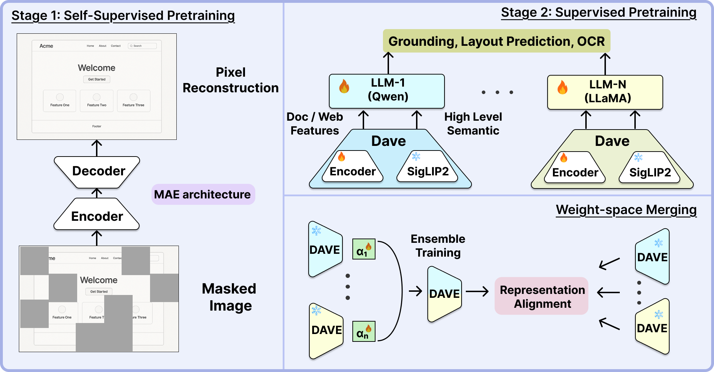
DAVE: A VLM Vision Encoder for Document Understanding and Web Agents
ICLR2026
We introduce DAVE, a vision encoder purpose-built for VLMs and tailored for document understanding and web agents.
-
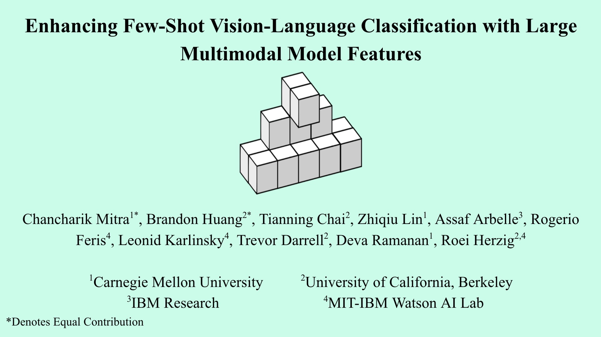
Enhancing Few-Shot Vision-Language Classification with Large Multimodal Model Features
ICCV2025
project page code bibtex social media
SAVs is a finetuning-free method that leverages sparse attention head activations (fewer than 5% of heads) in LMMs as powerful feature representations for vision-language classification tasks, achieving state-of-the-art performance compared to both few-shot and finetuned baselines.
-
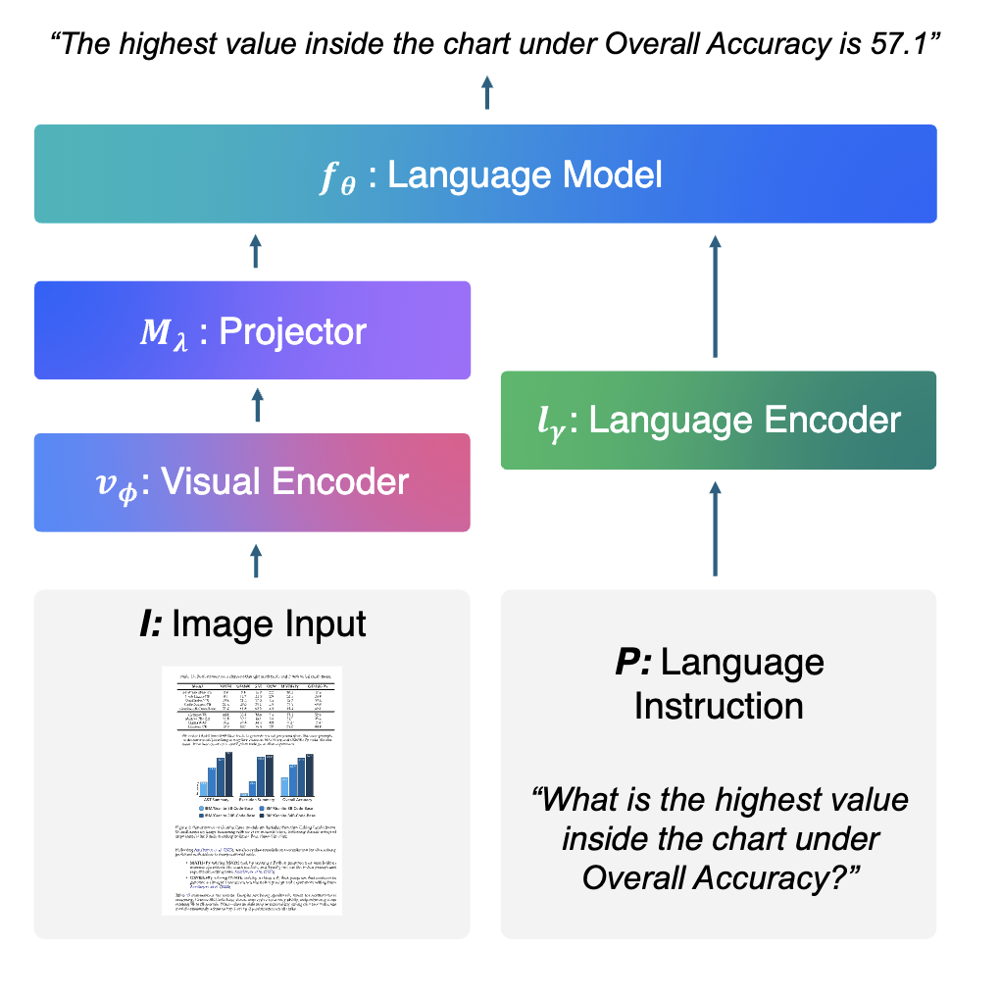
Granite Vision: A Lightweight, Open-source Multimodal Model for Enterprise Intelligence
Technical Report2025
We introduce Granite Vision, a lightweight large language model with vision capabilities, specifically designed to excel in enterprise use cases, particularly in visual document understanding.
-

Multimodal Task Vectors Enable Many-Shot Multimodal In-Context Learning
NeurIPS2024
We demonstrate the existence of multimodal task vectors — compact implicit representations of many-shot in-context examples compressed in the model's attention head — and leverage them for many-shot in-context learning in LMMs.
-
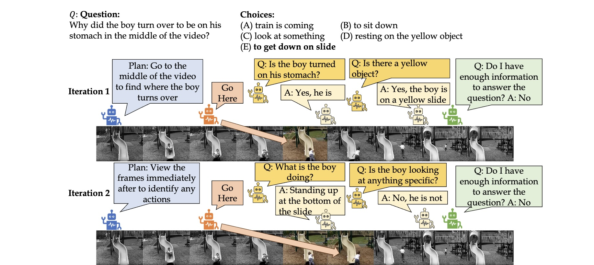
TraveLER: A Modular Multi-LMM Agent Framework for Video QA
EMNLP2024
We present TraveLER, a modular multi-LMM agent framework for video question-answering that does not require task-specific fine-tuning or annotations. Through interactive question-asking using several agents with different roles, our framework answers questions by collecting relevant information from keyframes.
-
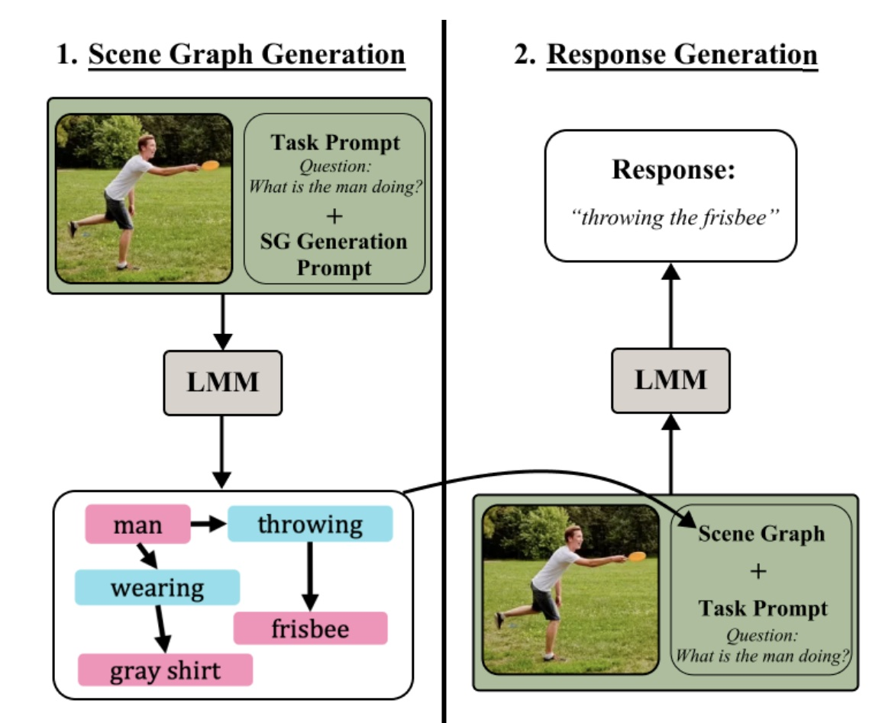
Compositional Chain-of-Thought Prompting for Large Multimodal Models
CVPR2024
We propose Compositional Chain-of-Thought (CCoT), a novel zero-shot Chain-of-Thought prompting method that utilizes scene graph representations to extract compositional knowledge from an LMM.
-
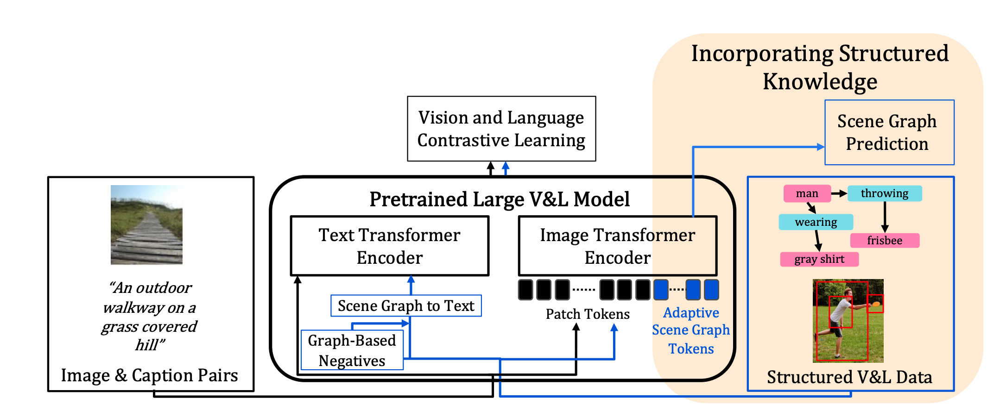
Incorporating Structured Representations into Pretrained Vision & Language Models Using Scene Graphs
EMNLP2023
We propose to improve pretrained VLMs, which are usually trained on large-scale image-text pairs, by designing a specialized model architecture and a new training method that utilizes a small set of scene graph annotations from the Visual Genome dataset that are richer and reflect structured visual and textual information.
-
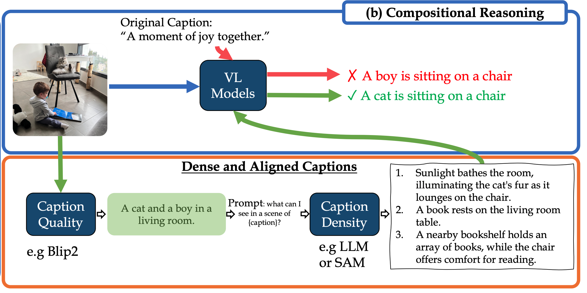
Dense and Aligned Captions Promote Compositional Reasoning in VL Models
NeurIPS2023Spotlight
We propose a fine-tuning approach for automatically treating two factors limiting VL models' compositional reasoning performance: (i) the caption quality, or "image alignment", of the texts; and (ii) the level of caption density, which refers to the number of details that appear in the image.
-
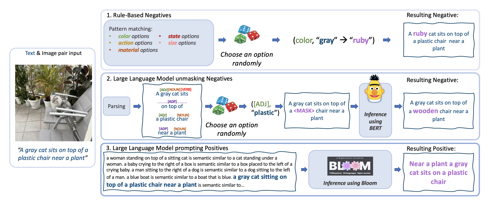
Teaching Structured Vision & Language Concepts to Vision & Language Models
CVPR2023
We demonstrate language augmentation techniques for teaching language structure to VL models.
-
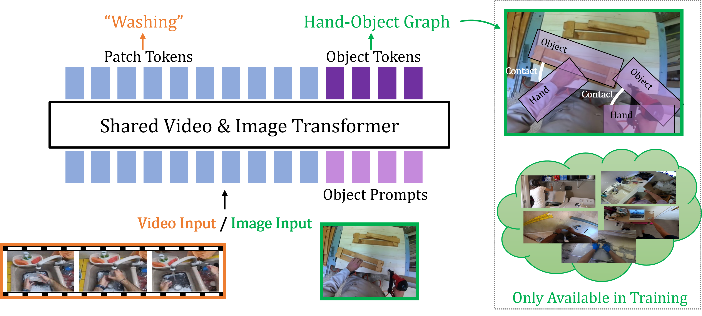
Bringing Image Scene Structure to Video via Frame-Clip Consistency of Object Tokens
NeurIPS2022
Winner of the Ego4D CVPR'22 Point of No Return Temporal Localization Challenge, 2022
We present SViT (Structured Video Tokens), a model that utilizes the structure of a small set of images, whether within or outside the domain of interest, available only during training for a video downstream task.
-
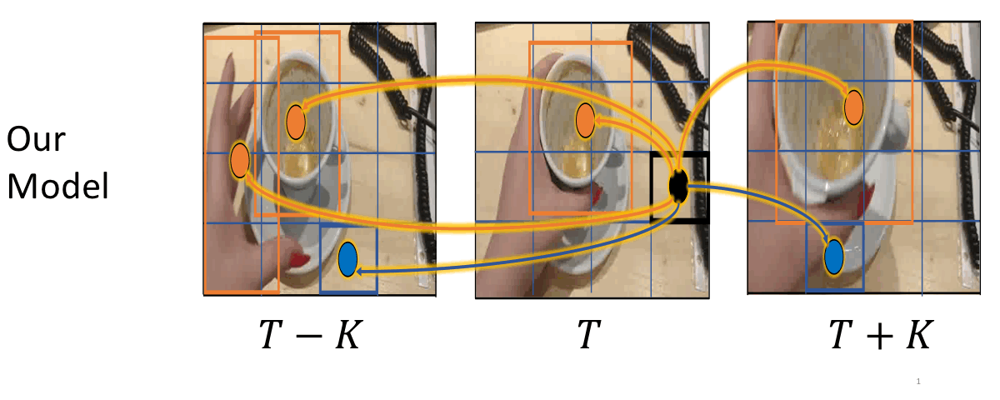
Object-Region Video Transformers
CVPR2022
We present ORViT, an object-centric approach that extends video transformer layers with a block that directly incorporates object representations.
-
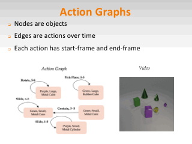
Compositional Video Synthesis with Action Graphs
ICML2021
project page code slides bibtex
We introduce the formalism of Action Graphs, a natural and convenient structure representing the dynamics of actions between objects over time. We show we can synthesize goal-oriented videos on the CATER and Something-Something datasets and generate novel compositions of unseen actions.
-
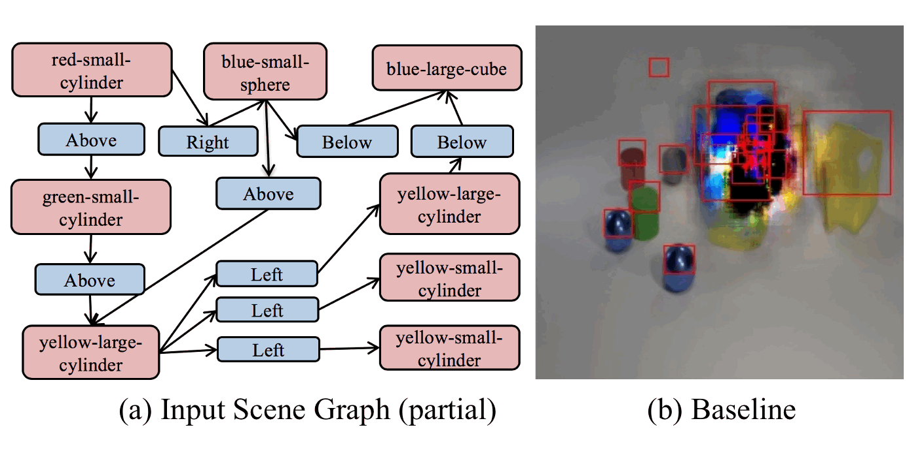
Learning Canonical Representations for Scene Graph to Image Generation
ECCV2020
We present a novel model that can inherently learn canonical graph representations and show better robustness to graph size, adversarial attacks, and semantic equivalent, generating superior images of complex visual scenes.
-
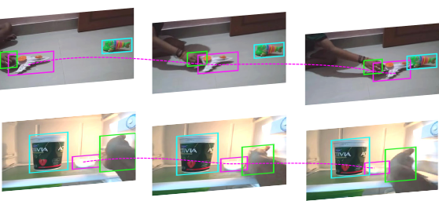
Something-Else: Compositional Action Recognition with Spatial-Temporal Interaction Networks
CVPR2020
project page code dataset bibtex
We propose a novel compositional action recognition task where the training combinations of verbs and nouns do not overlap with the test set. We show the effectiveness of our approach on the proposed compositional task and a few-shot compositional setting which requires the model to generalize across both object appearance and action category.
-
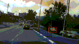
Spatio-Temporal Action Graph Networks
ICCV Workshop on Autonomous Driving2019Oral
We propose a latent inter-object graph representation for activity recognition that explores the visual interaction between the objects in a self-supervised manner.
-
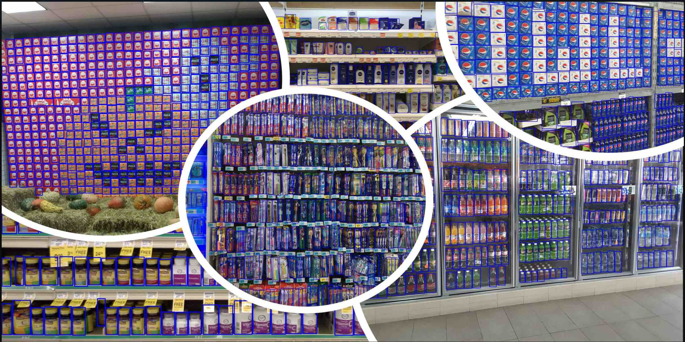
Precise Detection in Densely Packed Scenes
CVPR2019
We collect a new SKU-110K dataset which takes detection challenges to unexplored territories, and propose a novel mechanism to learn deep overlap rates for each detection.
-
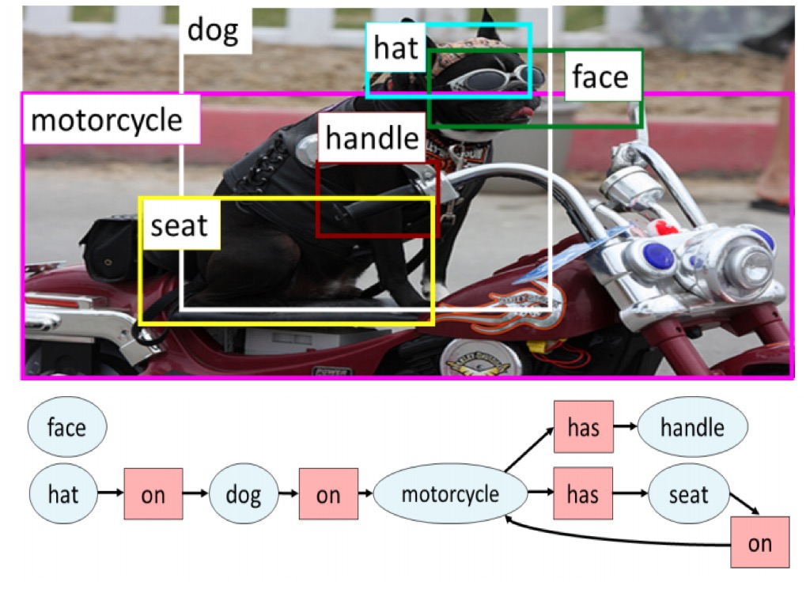
Mapping Images to Scene Graphs with Permutation-Invariant Structured Prediction
NeurIPS2018
We propose a novel invariant graph network for mapping images to scene graphs using the permutation invariant property, achieving state-of-the-art results on the Visual Genome dataset.
Students & Collaborators
If you are a student interested in collaborating on research projects, please reach out.
Current
- Kelvin Li (2025–Present) — Undergraduate student, UC Berkeley.
- Mihir Rao (2025–Present) — Undergraduate student, UC Berkeley.
- Anthony Liang (2025–Present) — PhD student, USC → TRI.
- Abrar Anwar (2025–Present) — PhD student, USC → NVIDIA.
- Anirudh Pai (2024–Present) — Undergraduate and MSc student, UC Berkeley.
- James Ni (2024–Present) — Undergraduate student, UC Berkeley → Georgia Tech PhD.
- Chancharik Mitra (2023–Present) — Undergraduate student, UC Berkeley and CMU MSc → MIT PhD.
- Chuyi Shang (2023–Present) — Undergraduate and MSc student, UC Berkeley.
- Dantong Niu (2023–Present) — PhD student, UC Berkeley.
- Yuvan Sharma (2023–Present) — Undergraduate student, UC Berkeley → Caltech PhD.
Former
- Baifeng Shi (2024–2026) — PhD student, UC Berkeley → Physical Intelligence.
- Tianning Ray Chai (2024–2025) — Visiting undergraduate student, UC Berkeley.
- Zekai Wang (2024–2025) — Undergraduate student, UC Berkeley.
- Amos You (2023–2024) — Undergraduate student, UC Berkeley → Mistral AI.
- Brandon Huang (2023–2025) — Undergraduate and MSc student, UC Berkeley and MIT-IBM intern.
- Yida (David) Yin (2023–2024) — Undergraduate student, UC Berkeley → Princeton PhD.
- Alon Mendelson (2022–2023) — MSc student, Tel Aviv University → Opti.
- Elad Ben-Avraham (2021–2022) — MSc student, Tel Aviv University → Amazon.
Invited Talks
Partial list of invited talks and presentations.
- Apr 2026 Towards Structured Physical AI Models — Spring 2026 BAIR Robotics Workshop
- Oct 2025 Structured Physical Intelligence — MRR Workshop, ICCV 2025
- Aug 2025 Structured Physical Intelligence (5-min spotlight) — Agentic AI Summit 2025
- Jun 2025 Structured Physical Intelligence — T4V Workshop, CVPR 2025
- Jun 2025 Structured Physical Intelligence — Agents Workshop, CVPR 2025
- Apr 2025 Structured Robotic Visual Intelligence — Spring 2025 BAIR Robotics Workshop
- Dec 2023 Towards Compositionality in Large Multimodal Models — Fall 2023 BAIR Visual AI Workshop
- Jan 2023 Towards Compositionality in Video Understanding — Israeli Vision Day
- Dec 2022 NeurIPS 2022 Highlights — TAU Fundamentals of AI, Tel Aviv University
- Dec 2022 Towards Compositionality in Video Understanding — Vision and AI Seminar, Weizmann Institute of Science
- Jun 2022 Towards Compositionality in Video Understanding — Israeli Association for AI Conference 2022
- Mar 2022 ORViT: Object-Region Video Transformers — BAIR Visual Computing Workshop
- Oct 2021 Towards Compositionality in Video Understanding — IMVC 2021
- Oct 2021 Towards Compositionality in Video Understanding by Prof. Trevor Darrell — ICCV21 SRVU Workshop
- Dec 2020 Compositional Video Synthesis with Action Graphs — Israel Vision Day
- Aug 2020 Learning Canonical Representations for Scene Graph to Image Generation — BAIR Fall Seminar
- Aug 2020 Compositional Video Synthesis with Action Graphs — Israeli Geometric Deep Learning. Slides.
- Jun 2020 Structured Semantic Understanding for Videos and Images — Computer Graphics Seminar at TAU. Slides.